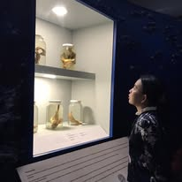
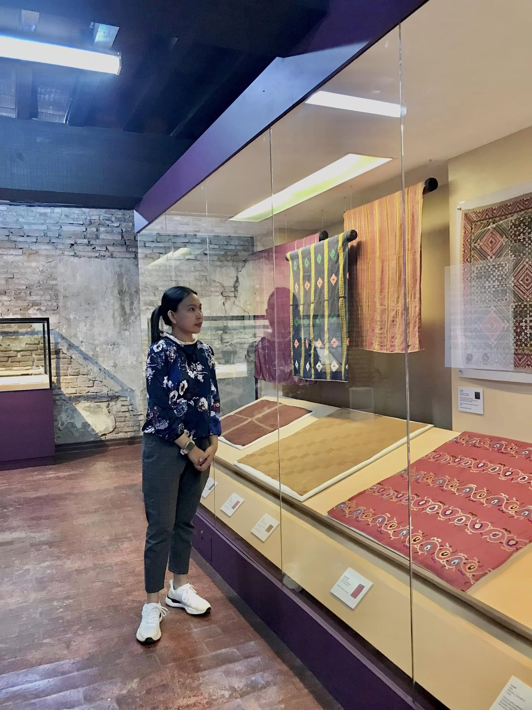
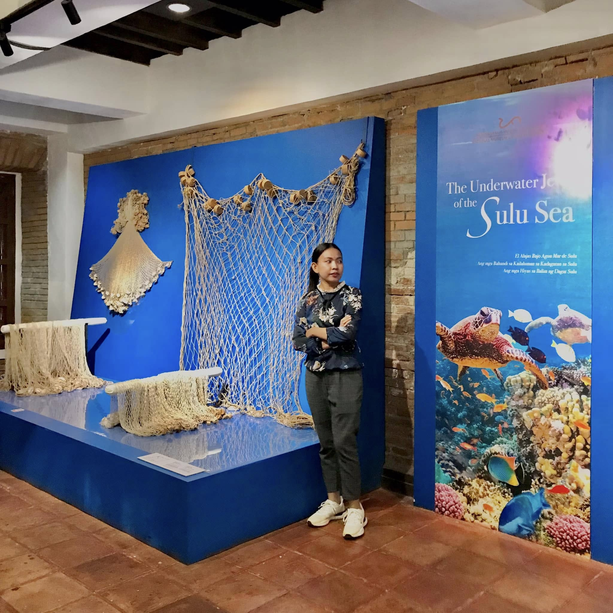
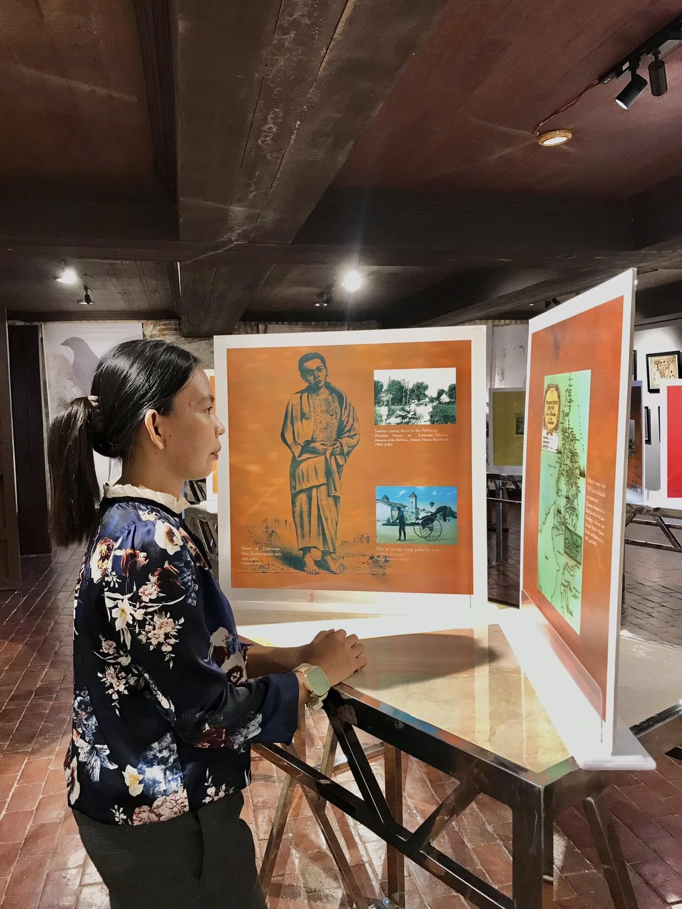

A Poem For You (Click to Read)
"A teacher's light, a guiding star, You show us who we truly are..."
Mini Gallery





From BSCS III-B
"A teacher's light, a guiding star, You show us who we truly are..."


